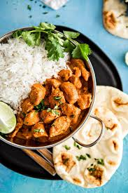

Butter Chicken

Description
A rich and creamy Indian dish featuring tender chicken pieces cooked in a flavorful tomato-based gravy with
butter and aromatic spices.
Ingredients
- 500g boneless chicken, cut into cubes
- 2 tbsp butter + 1 tbsp oil
- 1 cup tomato puree (or blended fresh tomatoes)
- 1/2 cup fresh cream
- 1 tbsp ginger-garlic paste, 1 tsp garam masala, 1 tsp red chili powder, 1/2 tsp turmeric
Steps to Cook
- Marinate Chicken: Mix chicken with 1 tbsp ginger-garlic paste, 1/2 tsp turmeric, 1 tsp red chili powder, and salt. Let it sit for 20 mins.
- Cook Chicken: Heat 1 tbsp oil, sauté chicken until lightly browned. Remove and set aside.
- Prepare Gravy: In the same pan, melt butter. Add 1 tbsp ginger-garlic paste, sauté for 30 secs. Add tomato puree and cook until oil separates.
- Combine & Simmer: Add 1 tsp garam masala, salt, and the cooked chicken. Stir in fresh cream and simmer for 5-7 mins.
- Finish & Serve: Garnish with coriander leaves and a drizzle of cream. Serve hot with naan or rice.
Enjoy your delicious Chicken Butter Masala! 😊
Home